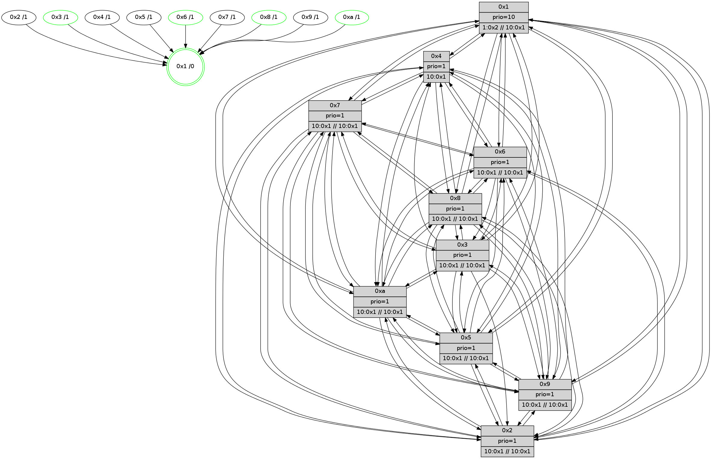

>> << IDX [start] -100 -25 -5 +0 +5 +25 +100 [535.56952405]
 Previous packets
----------------------------------------------------------------------
530.052610 beacon01(faad) #0 coord=01,02,03,04,05,06,07,0a,09,08 cycle=688.0ms assoc
-- color-indic=1 64 23 3d
530.062592 beacon02(faad) #0 coord=01,02,03,04,05,06,07,0a,09,08 cycle=688.0ms assoc 64 b0 0c
530.072592 beacon03(faad) #0 coord=01,02,03,04,05,06,07,0a,09,08 cycle=688.0ms assoc 64 ca 41
530.082592 beacon04(faad) #0 coord=01,02,03,04,05,06,07,0a,09,08 cycle=688.0ms assoc 64 bd ab
530.092593 beacon05(faad) #0 coord=01,02,03,04,05,06,07,0a,09,08 cycle=688.0ms assoc 64 c7 e6
530.102593 beacon06(faad) #0 coord=01,02,03,04,05,06,07,0a,09,08 cycle=688.0ms assoc 64 49 31
530.112596 beacon07(faad) #0 coord=01,02,03,04,05,06,07,0a,09,08 cycle=688.0ms assoc 64 33 7c
530.122598 beacon0a(faad) #0 coord=01,02,03,04,05,06,07,0a,09,08 cycle=688.0ms assoc 64 42 77
530.132598 beacon09(faad) #0 coord=01,02,03,04,05,06,07,0a,09,08 cycle=688.0ms assoc 64 cc a0
530.142599 beacon08(faad) #0 coord=01,02,03,04,05,06,07,0a,09,08 cycle=688.0ms assoc 64 b6 ed
530.153847 [STC(2)->1 #0.19 tree-change,inconsistent-stability,to-color d=1]
530.155447 [STC(4)->1 #0.19 tree-change,inconsistent-stability,to-color d=1]
530.157649 [STC(9)->1 #0.19 tree-change,inconsistent-stability,to-color d=1]
530.158929 [Hello(7): seq=341 sym=2,3,5,6,4,8,9,10,1 sysInfo= stat=2:10,2,9,7/3:4,4,8,5/5:4,3,8,7/6:1,5,1,2/4:0,3,7,4/8:5,8,8,2/9:4,2,8,6/10:7,2,8,3/1:7,2,10,0]
530.161964 [Hello(6): seq=341 sym=2,3,5,4,7,9,8,10,1 sysInfo=coloring-mode-on,ColoringModeIndicationCalled stat=2:7,5,8,4/3:10,8,7,3/5:10,5,7,6/4:10,6,5,4/7:15,11,6,2/9:8,7,8,5/8:5,5,7,3/10:7,4,9,3/1:8,3,11,0]
530.165412 [STC(6)->1 #0.19 tree-change,inconsistent-stability,stable,to-color d=1]
530.166680 [STC(7)->1 #0.19 tree-change,inconsistent-stability,to-color d=1]
530.168452 [Color(6) seq=21 @0:0 prio=1 >10.@1,1.@2,1.@3,1.@4 >>10.@1,1.@2,1.@3]
530.170570 [STC(8)->1 #0.19 tree-change,inconsistent-stability,stable,to-color d=1]
530.173156 [Color(8) seq=21 @0:0 prio=1 >10.@1,1.@2,1.@3,1.@4 >>10.@1,1.@2,1.@3]
530.175554 [STC(10)->1 #0.19 tree-change,inconsistent-stability,to-color d=1]
530.180664 [STC(3)->1 #0.19 tree-change,inconsistent-stability,stable,to-color d=1]
530.182637 [Color(3) seq=21 @0:0 prio=1 >10.@1,1.@2,1.@4,1.@5 >>10.@1,1.@2,1.@3]
----------------------------------------------------------------------
530.840741 beacon01(faad) #0 coord=01,02,03,04,05,06,07,0a,09,08 cycle=688.0ms assoc
-- color-indic=1 64 9f 38
530.850723 beacon02(faad) #0 coord=01,02,03,04,05,06,07,0a,09,08 cycle=688.0ms assoc 64 0c 09
530.860724 beacon03(faad) #0 coord=01,02,03,04,05,06,07,0a,09,08 cycle=688.0ms assoc 64 76 44
530.870723 beacon04(faad) #0 coord=01,02,03,04,05,06,07,0a,09,08 cycle=688.0ms assoc 64 01 ae
530.880723 beacon05(faad) #0 coord=01,02,03,04,05,06,07,0a,09,08 cycle=688.0ms assoc 64 7b e3
530.890723 beacon06(faad) #0 coord=01,02,03,04,05,06,07,0a,09,08 cycle=688.0ms assoc 64 f5 34
530.900723 beacon07(faad) #0 coord=01,02,03,04,05,06,07,0a,09,08 cycle=688.0ms assoc 64 8f 79
530.910727 beacon0a(faad) #0 coord=01,02,03,04,05,06,07,0a,09,08 cycle=688.0ms assoc 64 fe 72
530.920729 beacon09(faad) #0 coord=01,02,03,04,05,06,07,0a,09,08 cycle=688.0ms assoc 64 70 a5
530.930729 beacon08(faad) #0 coord=01,02,03,04,05,06,07,0a,09,08 cycle=688.0ms assoc 64 0a e8
530.941896 [Hello(5): seq=342 sym=7,6,4,3,1,9,8,10,2 sysInfo= stat=7:6,12,9,2/6:9,1,9,3/4:1,9,5,3/3:1,5,1,0/1:0,13,11,0/9:1,6,7,3/8:0,3,2,1/10:12,7,5,2/2:3,7,6,3]
530.944766 [Hello(8): seq=285 sym=5,2,3,4,7,6,9,10,1 sysInfo=coloring-mode-on,ColoringModeIndicationCalled stat=5:6,5,5,4/2:0,7,6,4/3:13,10,6,5/4:4,8,6,4/7:5,10,8,3/6:10,0,9,4/9:7,6,6,3/10:2,5,4,3/1:8,0,13,0]
530.947632 [Hello(3): seq=342 sym=1,7,6,2,4,8,9,10,5 sysInfo=coloring-mode-on,ColoringModeIndicationCalled stat=1:11,15,13,0/7:12,13,6,2/6:2,13,6,4/2:4,6,6,5/4:7,8,5,3/8:3,2,1,0/9:10,5,8,4/10:4,3,2,1/5:7,5,6,4]
530.953206 [Color(1) seq=22 @0:0 prio=10 >1.@2,1.@3,1.@4,1.@5 >>10.@1,1.@2,1.@3]
530.967378 [Hello(10): seq=274 sym=6,3,2,8,9,5,7,4,1 sysInfo= stat=6:12,1,7,3/3:1,13,7,5/2:10,7,4,5/8:0,13,7,2/9:10,6,6,3/5:5,5,5,4/7:7,13,7,2/4:2,9,4,5/1:4,14,12,0]
----------------------------------------------------------------------
531.628870 beacon01(faad) #0 coord=01,02,03,04,05,06,07,0a,09,08 cycle=688.0ms assoc
-- color-indic=1 64 ab 20
531.638852 beacon02(faad) #0 coord=01,02,03,04,05,06,07,0a,09,08 cycle=688.0ms assoc 64 38 11
531.648852 beacon03(faad) #0 coord=01,02,03,04,05,06,07,0a,09,08 cycle=688.0ms assoc 64 42 5c
531.658854 beacon04(faad) #0 coord=01,02,03,04,05,06,07,0a,09,08 cycle=688.0ms assoc 64 35 b6
531.668853 beacon05(faad) #0 coord=01,02,03,04,05,06,07,0a,09,08 cycle=688.0ms assoc 64 4f fb
531.678853 beacon06(faad) #0 coord=01,02,03,04,05,06,07,0a,09,08 cycle=688.0ms assoc 64 c1 2c
531.688853 beacon07(faad) #0 coord=01,02,03,04,05,06,07,0a,09,08 cycle=688.0ms assoc 64 bb 61
531.698857 beacon0a(faad) #0 coord=01,02,03,04,05,06,07,0a,09,08 cycle=688.0ms assoc 64 ca 6a
531.708858 beacon09(faad) #0 coord=01,02,03,04,05,06,07,0a,09,08 cycle=688.0ms assoc 64 44 bd
531.718858 beacon08(faad) #0 coord=01,02,03,04,05,06,07,0a,09,08 cycle=688.0ms assoc 64 3e f0
531.730016 [Hello(7): seq=342 sym=2,3,5,6,4,8,9,10,1 sysInfo= stat=2:11,2,9,7/3:5,5,9,5/5:5,3,8,7/6:1,6,1,2/4:0,3,7,4/8:6,9,9,2/9:4,2,8,6/10:8,2,9,3/1:7,3,10,0]
531.733054 [Color(3) seq=22 @0:0 prio=1 >10.@1,1.@2,1.@4,1.@5 >>10.@1,1.@2,1.@3]
531.735324 [Hello(6): seq=342 sym=2,3,5,4,7,9,8,10,1 sysInfo=coloring-mode-on,ColoringModeIndicationCalled stat=2:8,5,9,4/3:11,9,8,3/5:11,5,7,6/4:10,6,6,4/7:15,11,7,2/9:8,7,8,5/8:6,6,8,3/10:8,4,10,3/1:8,4,11,0]
531.738452 [Color(6) seq=22 @0:0 prio=1 >10.@1,1.@2,1.@3,1.@4 >>10.@1,1.@2,1.@3]
531.741584 [Hello(1): seq=251 sym=4,2,9,5,10,3,8,6,7 sysInfo=coloring-mode-on,ColoringModeRequestCalled stat=4:11,11,8,5/2:8,9,9,6/9:5,9,10,5/5:2,10,8,6/10:10,12,8,3/3:9,0,11,6/8:11,15,12,3/6:12,4,11,3/7:7,14,12,5]
531.745671 [Color(8) seq=22 @0:0 prio=1 >10.@1,1.@2,1.@3,1.@4 >>10.@1,1.@2,1.@3]
----------------------------------------------------------------------
532.417001 beacon01(faad) #0 coord=01,02,03,04,05,06,07,0a,09,08 cycle=688.0ms assoc
-- color-indic=1 64 17 25
532.426983 beacon02(faad) #0 coord=01,02,03,04,05,06,07,0a,09,08 cycle=688.0ms assoc 64 84 14
532.436984 beacon03(faad) #0 coord=01,02,03,04,05,06,07,0a,09,08 cycle=688.0ms assoc 64 fe 59
532.446985 beacon04(faad) #0 coord=01,02,03,04,05,06,07,0a,09,08 cycle=688.0ms assoc 64 89 b3
532.456982 beacon05(faad) #0 coord=01,02,03,04,05,06,07,0a,09,08 cycle=688.0ms assoc 64 f3 fe
532.466984 beacon06(faad) #0 coord=01,02,03,04,05,06,07,0a,09,08 cycle=688.0ms assoc 64 7d 29
532.476985 beacon07(faad) #0 coord=01,02,03,04,05,06,07,0a,09,08 cycle=688.0ms assoc 64 07 64
532.486992 beacon0a(faad) #0 coord=01,02,03,04,05,06,07,0a,09,08 cycle=688.0ms assoc 64 76 6f
532.496989 beacon09(faad) #0 coord=01,02,03,04,05,06,07,0a,09,08 cycle=688.0ms assoc 64 f8 b8
532.506990 beacon08(faad) #0 coord=01,02,03,04,05,06,07,0a,09,08 cycle=688.0ms assoc 64 82 f5
532.518205 [Hello(3): seq=343 sym=1,7,6,2,4,8,9,10,5 sysInfo=coloring-mode-on,ColoringModeIndicationCalled stat=1:12,0,13,0/7:13,13,6,2/6:3,14,6,4/2:5,6,6,5/4:7,8,5,3/8:3,3,1,0/9:10,5,8,4/10:5,3,2,1/5:7,5,6,4]
532.520989 [Hello(4): seq=343 sym=5,7,6,2,3,9,8,10,1 sysInfo= stat=5:11,5,6,5/7:8,12,9,2/6:12,1,8,4/2:6,8,6,4/3:0,14,7,4/9:9,4,4,2/8:6,12,10,3/10:6,6,6,2/1:15,14,14,0]
532.523405 [Hello(10): seq=275 sym=6,3,2,8,9,5,7,4,1 sysInfo= stat=6:13,2,7,3/3:1,14,7,5/2:10,7,4,5/8:0,14,7,2/9:10,6,6,3/5:5,5,5,4/7:8,13,7,2/4:2,9,4,5/1:5,14,12,0]
532.527818 [Color(1) seq=23 @0:0 prio=10 >1.@2,1.@3,1.@4,1.@5 >>10.@1,1.@2,1.@3]
532.532698 [Hello(8): seq=286 sym=5,2,3,4,7,6,9,10,1 sysInfo=coloring-mode-on,ColoringModeIndicationCalled stat=5:6,5,5,4/2:1,7,6,4/3:14,10,6,5/4:4,8,6,4/7:6,10,8,3/6:10,0,9,4/9:7,6,6,3/10:3,5,4,3/1:8,1,13,0]
532.536791 [Hello(9): seq=286 sym=5,2,3,4,7,6,8,10,1 sysInfo=hasWarning stat=5:4,5,3,5/2:3,8,6,3/3:9,1,4,3/4:9,7,4,4/7:12,12,9,1/6:3,14,7,3/8:6,13,4,1/10:3,4,5,3/1:10,13,12,0]
532.540779 [Hello(5): seq=343 sym=7,6,4,3,1,9,8,10,2 sysInfo= stat=7:7,12,9,2/6:10,2,9,3/4:1,9,5,3/3:2,6,1,0/1:1,14,11,0/9:1,6,7,3/8:1,4,2,1/10:13,7,5,2/2:4,7,6,3]
----------------------------------------------------------------------
533.205131 beacon01(faad) #0 coord=01,02,03,04,05,06,07,0a,09,08 cycle=688.0ms assoc
-- color-indic=1 64 d3 2b
533.215114 beacon02(faad) #0 coord=01,02,03,04,05,06,07,0a,09,08 cycle=688.0ms assoc 64 40 1a
533.225113 beacon03(faad) #0 coord=01,02,03,04,05,06,07,0a,09,08 cycle=688.0ms assoc 64 3a 57
533.235113 beacon04(faad) #0 coord=01,02,03,04,05,06,07,0a,09,08 cycle=688.0ms assoc 64 4d bd
533.245114 beacon05(faad) #0 coord=01,02,03,04,05,06,07,0a,09,08 cycle=688.0ms assoc 64 37 f0
533.255113 beacon06(faad) #0 coord=01,02,03,04,05,06,07,0a,09,08 cycle=688.0ms assoc 64 b9 27
533.265115 beacon07(faad) #0 coord=01,02,03,04,05,06,07,0a,09,08 cycle=688.0ms assoc 64 c3 6a
533.275118 beacon0a(faad) #0 coord=01,02,03,04,05,06,07,0a,09,08 cycle=688.0ms assoc 64 b2 61
533.285119 beacon09(faad) #0 coord=01,02,03,04,05,06,07,0a,09,08 cycle=688.0ms assoc 64 3c b6
533.295120 beacon08(faad) #0 coord=01,02,03,04,05,06,07,0a,09,08 cycle=688.0ms assoc 64 46 fb
533.307535 [Hello(7): seq=343 sym=2,3,5,6,4,8,9,10,1 sysInfo= stat=2:11,2,9,7/3:6,6,9,5/5:6,3,8,7/6:2,7,1,2/4:1,3,7,4/8:7,10,9,2/9:5,2,8,6/10:8,2,9,3/1:8,4,10,0]
533.310579 [Color(8) seq=23 @0:0 prio=1 >10.@1,1.@2,1.@3,1.@4 >>10.@1,1.@2,1.@3]
533.312660 [Hello(1): seq=252 sym=4,2,9,5,10,3,8,6,7 sysInfo=coloring-mode-on,ColoringModeRequestCalled stat=4:11,11,8,5/2:8,9,9,6/9:6,9,10,5/5:3,10,8,6/10:10,12,8,3/3:10,0,11,6/8:12,0,12,3/6:12,4,11,3/7:7,14,12,5]
533.315320 [Hello(6): seq=343 sym=2,3,5,4,7,9,8,10,1 sysInfo=coloring-mode-on,ColoringModeIndicationCalled stat=2:8,5,9,4/3:12,9,8,3/5:12,5,7,6/4:11,6,6,4/7:0,11,7,2/9:9,7,8,5/8:7,7,8,3/10:8,4,10,3/1:9,5,11,0]
533.317834 [STC(1) #0.20 tree-change,inconsistent-stability,stable,to-color d=0]
533.319749 [Color(6) seq=23 @0:0 prio=1 >10.@1,1.@2,1.@3,1.@4 >>10.@1,1.@2,1.@3]
533.330315 [Color(3) seq=23 @0:0 prio=1 >10.@1,1.@2,1.@4,1.@5 >>10.@1,1.@2,1.@3]
----------------------------------------------------------------------
533.993262 beacon01(faad) #0 coord=01,02,03,04,05,06,07,0a,09,08 cycle=688.0ms assoc
-- color-indic=1 64 6f 2e
534.003245 beacon02(faad) #0 coord=01,02,03,04,05,06,07,0a,09,08 cycle=688.0ms assoc 64 fc 1f
534.013245 beacon03(faad) #0 coord=01,02,03,04,05,06,07,0a,09,08 cycle=688.0ms assoc 64 86 52
534.023246 beacon04(faad) #0 coord=01,02,03,04,05,06,07,0a,09,08 cycle=688.0ms assoc 64 f1 b8
534.033244 beacon05(faad) #0 coord=01,02,03,04,05,06,07,0a,09,08 cycle=688.0ms assoc 64 8b f5
534.043247 beacon06(faad) #0 coord=01,02,03,04,05,06,07,0a,09,08 cycle=688.0ms assoc 64 05 22
534.053246 beacon07(faad) #0 coord=01,02,03,04,05,06,07,0a,09,08 cycle=688.0ms assoc 64 7f 6f
534.063250 beacon0a(faad) #0 coord=01,02,03,04,05,06,07,0a,09,08 cycle=688.0ms assoc 64 0e 64
534.073234 beacon09(faad) #0 coord=01,02,03,04,05,06,07,0a,09,08 cycle=688.0ms assoc 64 80 b3
534.083250 beacon08(faad) #0 coord=01,02,03,04,05,06,07,0a,09,08 cycle=688.0ms assoc 64 fa fe
534.094645 [Hello(9): seq=287 sym=5,2,3,4,7,6,8,10,1 sysInfo=hasWarning stat=5:5,5,3,5/2:3,8,6,3/3:9,2,4,3/4:9,7,4,4/7:13,12,9,1/6:4,15,7,3/8:6,14,4,1/10:3,4,5,3/1:11,13,13,0]
534.098000 [Hello(2): seq=341 sym=4,5,7,6,9,8,10,1 sysInfo=hasWarning stat=4:3,7,5,1/5:6,5,4,3/7:5,14,9,2/6:10,3,8,3/9:9,3,4,1/8:2,5,1,0/10:6,5,2,1/1:15,12,12,0]
534.100830 [STC(7)->1 #0.20 tree-change,inconsistent-stability,to-color d=1]
534.102111 [Hello(3): seq=344 sym=1,7,6,2,4,8,9,10,5 sysInfo=coloring-mode-on,ColoringModeIndicationCalled stat=1:12,1,13,0/7:14,13,6,2/6:3,14,6,4/2:5,6,6,5/4:8,8,5,3/8:4,3,1,0/9:11,5,8,4/10:5,3,2,1/5:8,5,6,4]
534.104544 [Hello(4): seq=344 sym=5,7,6,2,9,8,10,1 sysInfo= stat=5:12,5,6,5/7:9,12,9,2/6:13,2,8,4/2:7,8,6,4/9:10,4,4,2/8:7,13,10,3/10:6,6,6,2/1:0,15,15,0]
534.107548 [Color(1) seq=24 @0:0 prio=10 >1.@2,1.@3,1.@4,1.@5 >>10.@1,1.@2,1.@3]
534.109594 [STC(9)->1 #0.20 tree-change,inconsistent-stability,to-color d=1]
534.111590 [Hello(8): seq=287 sym=5,2,3,4,7,6,9,10,1 sysInfo=coloring-mode-on,ColoringModeIndicationCalled stat=5:7,5,5,4/2:1,7,6,4/3:14,11,6,5/4:4,8,6,4/7:7,10,8,3/6:11,1,9,4/9:8,6,6,3/10:3,5,4,3/1:9,1,14,0]
534.114735 [STC(8)->1 #0.20 tree-change,inconsistent-stability,stable,to-color d=1]
534.116181 [Hello(5): seq=344 sym=7,6,4,3,1,9,8,10,2 sysInfo= stat=7:8,12,9,2/6:11,3,9,3/4:1,9,5,3/3:2,7,1,0/1:2,14,12,0/9:1,6,7,3/8:1,5,2,1/10:13,7,5,2/2:4,7,6,3]
534.118707 [STC(2)->1 #0.20 tree-change,inconsistent-stability,to-color d=1]
534.120263 [STC(5)->1 #0.20 tree-change,inconsistent-stability,to-color d=1]
534.121537 [STC(4)->1 #0.20 tree-change,inconsistent-stability,to-color d=1]
534.127224 [Hello(10): seq=276 sym=6,3,2,8,9,5,7,4,1 sysInfo= stat=6:14,3,7,3/3:1,15,7,5/2:10,7,4,5/8:1,15,7,2/9:11,6,6,3/5:6,5,5,4/7:9,13,7,2/4:2,9,4,5/1:6,15,13,0]
534.130344 [STC(10)->1 #0.20 tree-change,inconsistent-stability,stable,to-color d=1]
534.133245 [TreeStatus(10)-.->1 #0.20 tree-change,inconsistent-stability,stable child=1]
----------------------------------------------------------------------
534.781393 beacon01(faad) #0 coord=01,02,03,04,05,06,07,0a,09,08 cycle=688.0ms assoc
-- color-indic=1 64 bb 1b
534.791375 beacon02(faad) #0 coord=01,02,03,04,05,06,07,0a,09,08 cycle=688.0ms assoc 64 28 2a
534.801375 beacon03(faad) #0 coord=01,02,03,04,05,06,07,0a,09,08 cycle=688.0ms assoc 64 52 67
534.811374 beacon04(faad) #0 coord=01,02,03,04,05,06,07,0a,09,08 cycle=688.0ms assoc 64 25 8d
534.821375 beacon05(faad) #0 coord=01,02,03,04,05,06,07,0a,09,08 cycle=688.0ms assoc 64 5f c0
534.831377 beacon06(faad) #0 coord=01,02,03,04,05,06,07,0a,09,08 cycle=688.0ms assoc 64 d1 17
534.841377 beacon07(faad) #0 coord=01,02,03,04,05,06,07,0a,09,08 cycle=688.0ms assoc 64 ab 5a
534.851381 beacon0a(faad) #0 coord=01,02,03,04,05,06,07,0a,09,08 cycle=688.0ms assoc 64 da 51
534.861382 beacon09(faad) #0 coord=01,02,03,04,05,06,07,0a,09,08 cycle=688.0ms assoc 64 54 86
534.871380 beacon08(faad) #0 coord=01,02,03,04,05,06,07,0a,09,08 cycle=688.0ms assoc 64 2e cb
534.883515 [Hello(7): seq=344 sym=2,3,5,6,4,8,9,10,1 sysInfo= stat=2:11,2,10,7/3:7,7,9,5/5:7,3,9,7/6:3,8,1,2/4:1,3,8,4/8:8,11,10,2/9:5,2,9,6/10:9,2,10,4/1:9,5,11,0]
534.886248 [Hello(6): seq=344 sym=2,3,5,4,7,9,8,10,1 sysInfo=coloring-mode-on,ColoringModeIndicationCalled stat=2:9,5,10,4/3:13,10,8,3/5:13,5,8,6/4:11,6,7,4/7:1,11,8,2/9:10,7,9,5/8:8,7,9,3/10:9,4,11,4/1:9,6,11,0]
534.888934 [Color(8) seq=24 @0:0 prio=1 >10.@1,1.@2,1.@3,1.@4 >>10.@1,1.@2,1.@3]
534.892741 [Color(6) seq=24 @0:0 prio=1 >10.@1,1.@2,1.@3,1.@4 >>10.@1,1.@2,1.@3]
534.895499 [Color(3) seq=24 @0:0 prio=1 >10.@1,1.@2,1.@4,1.@5 >>10.@1,1.@2,1.@3]
534.906221 [Hello(1): seq=253 sym=4,2,9,5,10,3,8,6,7 sym= sysInfo=coloring-mode-on,ColoringModeRequestCalled stat=]